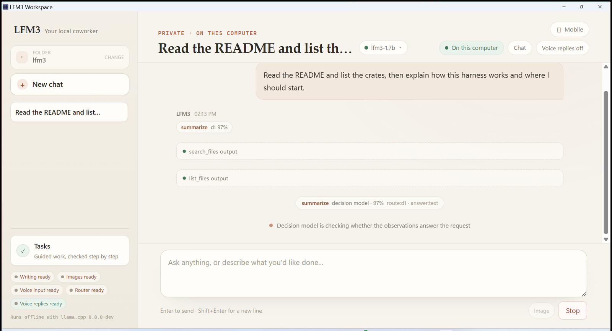

Using the app
Chat
Chat is the main surface. One bounded turn at a time, a visible route, tools confined to one folder, and a person who approves every write.
Chat is the surface the application opens on, and the one most work happens in. It is a conversation with a bounded loop behind it: one turn at a time, a visible route, tools confined to a single folder, and a person who approves every write.
Anatomy of a turn#
A turn starts when you send a message and ends when the model stops, hits a limit, or you press Stop. Each turn can use at most twelve tool rounds.
- Route. If the decision model is installed and your message is at least 24 characters, d1 classifies it into a task shape before the acting model runs. The chosen intent, its source, the confidence, and the local roles for the turn appear in the transcript and are carried into the system prompt.
- Act. The acting model streams its reply and can call tools. Reads and searches execute immediately; writes and edits become pending actions.
- Gate. Before a write action becomes an approval card, the write gate compares it with your latest request. After the first batch of read-only results, the evidence gate judges whether those observations are sufficient.
- Approve. A pending write appears inline with its path and exact content or diff. Allow once executes it; Deny leaves the file untouched. Pending actions expire after ten minutes.
- Return control. The turn ends. The model does not keep working in the background, and a second send while a turn is active is refused with a visible error rather than queued.


- Your messageThe request the write and evidence gates compare every proposal against.
- RouteIntent from the decision model, with its confidence. Capability hints only: it cannot grant a tool or skip approval.
- Tool callsEach call shows the tool and its real output. Reads run; writes stop and wait for approval instead.
- Answer gateThe second gate, judging whether the observations answer your request.
- Gate statusThe verdict, in words. It is advisory: it can hold an answer back, never certify it.
- StopLive for the whole turn. Cancelling also voids any pending approval.
Stop cancels the stream and any pending approval. It is not advisory: the child model request is cancelled and no further tool call from that turn is accepted.
Routing#
The decision model is a classifier, not an agent. It answers with a label from a closed set and a confidence in basis points; the harness owns the floor.
| Intent | Meaning |
|---|---|
general | Ordinary conversation; no specialist role needed |
explore | Map a folder or find files |
summarize | Read sources and condense them |
related | Trace how files relate to one another |
report | Produce a Markdown deliverable |
vision | Inspect an image |
voice | Work from a recording or transcript |
Routing rules that matter in practice:
- Messages shorter than 24 characters skip d1 entirely, so greetings cost nothing.
- A confident non-general answer (at least 55%) replaces a calibrated keyword route.
- A confident
generalanswer keeps the turn conversational. - If d1 is absent, unavailable, too slow, below the floor, or returns an undeclared label, the keyword route stands.
- Routing selects capability hints only. It cannot grant a tool, weaken a check, or skip approval.
The transcript shows the route you got, so a wrong classification is visible rather than silent.
Decision gates#
d1 is consulted at two more points inside a turn. Each has its own typed contract, a closed label set, a harness-owned confidence floor, and a 12-second budget.
Write gate — before an approval card is created for write_file or edit_file. It asks whether the proposed change is aligned with, uncertain about, or contradicts your latest request.
| Answer | Behaviour |
|---|---|
aligned | The approval card is shown as usual |
uncertain | The card is shown with an advisory note |
contradicts, confidence at or above 7,500 bps | A hold: no card is shown, nothing is written, and the model is told not to retry the same change |
| Anything below the floor, slow, or absent | The approval card is shown as usual |
Evidence gate — after the first batch of read-only tool results. It asks whether those observations are sufficient, insufficient, or off-topic for the request, with a floor of 6,500 bps. Anything other than sufficient adds an advisory system note telling the model to state what evidence is missing rather than guess.
Neither gate can approve, deny, or execute anything. A hold only withholds a mismatched change from the approval card; you still decide every write. The latest gate result appears as a chip under the conversation.
Gates are advisory by design
A gate that could approve would be a second authority competing with yours. The harness keeps every gate one-way: it can slow a turn down or ask for better evidence, never let a write through.
Tools in a turn#
The acting model is offered a fixed set: list_files, read_file, search_files, related_files, write_file, and edit_file. Two more are granted only when their model is provisioned: look for the vision model, transcribe for the audio model. The Tool reference documents each one.
The runtime accepts native streamed tool calls and a fenced `tool JSON block for models that cannot emit a native call. Both paths go through the same approval gate, so the fallback cannot bypass consent.
Context window#
The acting model is served with a 32,000-token window. Each request carries a fixed system prompt, the newest 240 messages capped at about 96,000 characters (roughly 24,000 tokens, leaving room for tool output and the reply), temperature 0.3, and at most 1,024 output tokens.
Older messages fall out of the request window before they fall out of the transcript. The transcript is complete; the context is bounded. Long sessions therefore keep their history on disk and a recent slice in the prompt.
Image attachments#
+img in the composer accepts a PNG, JPEG, WebP, or GIF up to 20 MB. The file is copied to .attachments/<uuid>-<name>.<ext> inside the workspace and a workspace-relative instruction is inserted into the message. The model inspects it with look, which loads the image through the local vision model.
An attachment is user-initiated, stays inside the workspace, and is never a model write. Delete the .attachments folder whenever you like; the transcript keeps the reference, and the image is simply gone.
The vision model observes one image at a time and receives measured facts — format, byte length, and pixel dimensions — because it cannot know them by itself.
Voice input#
The microphone button records with the browser's MediaRecorder, decodes and resamples the clip to 16 kHz mono WAV, and sends it as base64 to Rust. The local audio model receives an input_audio content part and returns verbatim text, which lands in the composer for you to edit before sending.
- No audio leaves the machine.
- The transcription is not sent automatically; you review it.
- The audio role needs both
LFM3-Audio-2B-Q4_K_M.ggufand itsmmproj. Without them the microphone path reports that the voice model is unavailable. - The operating system may ask for microphone permission on first use.
Voice replies#
Speak on any answer, or the header Voice replies toggle, calls synthesize_speech, which renders one answer with llama-tts using the same LFM3-Audio-2B weight and mmproj that listen.
- The pinned runtime is b11960. The harness uses the documented
--tts-voice female|maleoption and the model card's audio sampling defaults. - A 120-second watchdog kills the owned
llama-ttsprocess if it hangs. - The temporary WAV is removed after it is returned.
- If the voice pair is incomplete, Windows falls back to the offline system voice and labels it
system-sapi, so you can tell which voice spoke. Linux has no system-voice fallback and reports the local voice as unavailable. - The health report exposes
voice_output.backend = "lfm3-tts",model = "LFM3-Audio-2B", andlfm3_tts_weightswhen the binary and both files are present.
Sessions#
Conversations are stored in chat.db in the trusted data directory, with rename, delete, and new-chat controls in the sidebar. Pending approvals are persisted with the transcript, so a restart does not silently drop or silently apply one.
A turn that the app stopped in the middle of comes back marked cancelled rather than being replayed. Nothing resumes on its own.
What chat is not#
Chat output is not verified work. No chat message, tool result, or approval can satisfy a mission check, and a verified run never writes through the chat approval path.
If a result has to be machine-certified — a report with required facts, a structured extraction, a screenshot review — use Verified tasks, which freezes the acceptance contract before execution and records provenance for every check.
Development demo mode
?demo=1 in a development build renders the verified-task surface only. Chat is intentionally unavailable there and says so. The production bundle contains no demo bridge at all.